UX Designer at Walmart Global Tech, building enterprise finance platforms used by tens of thousands of associates. Founding designer on a 0→1 social app. Sponsored skateboarder in my off hours.
An enterprise finance platform used by thousands, and a social product I built from a blank canvas.
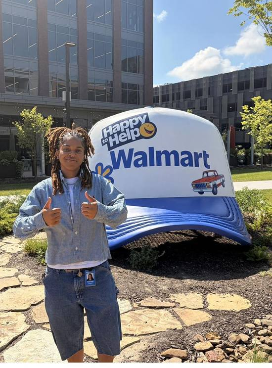
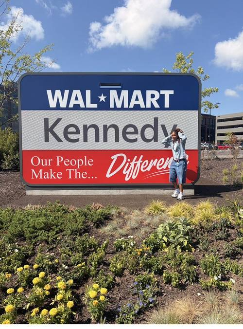
At Walmart Global Tech I design user-centered solutions at the intersection of people, technology, and business — mostly inside the enterprise finance systems that keep hundreds of thousands of associates paid back correctly and on time. Outside of design, I'm a sponsored skateboarder and creator who's always looking for new ways to stay creative.
"Great design goes beyond aesthetics — it's about understanding people. Every project begins with deep empathy: identifying user needs, simplifying complex interactions, and designing solutions that feel natural and intuitive."
Lead UX for reimbursement, procurement & cash-advance platforms used by 29K+ weekly users. Cut submission time from ~45 min to ~30 sec.
Founding designer on an animanga social platform. Launched MVP to 10K+ downloads in month one.
Prioritized roadmaps, ran competitive analysis, prototyped an internal expense platform, presented to the CTO.
Wireframes, prototypes, and usability testing to shape a client's accessibility roadmap.
Education focused on human-computer interaction and experience design.
Click any project to open its full case study — the problem, my process, the decisions I made, and what happened after launch.
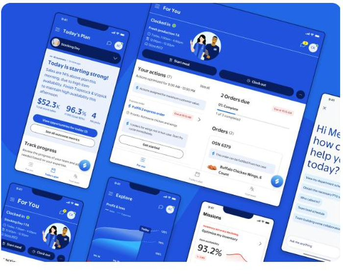
Exploring a glanceable view of today's priorities & performance for store associates.
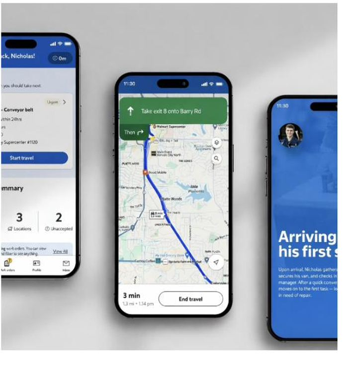
A live task queue combined with turn-by-turn navigation between job sites.
Walmart's enterprise expense platform, rebuilt to turn a 45-minute paperwork chore into a 30-second task for 9,000+ associates.
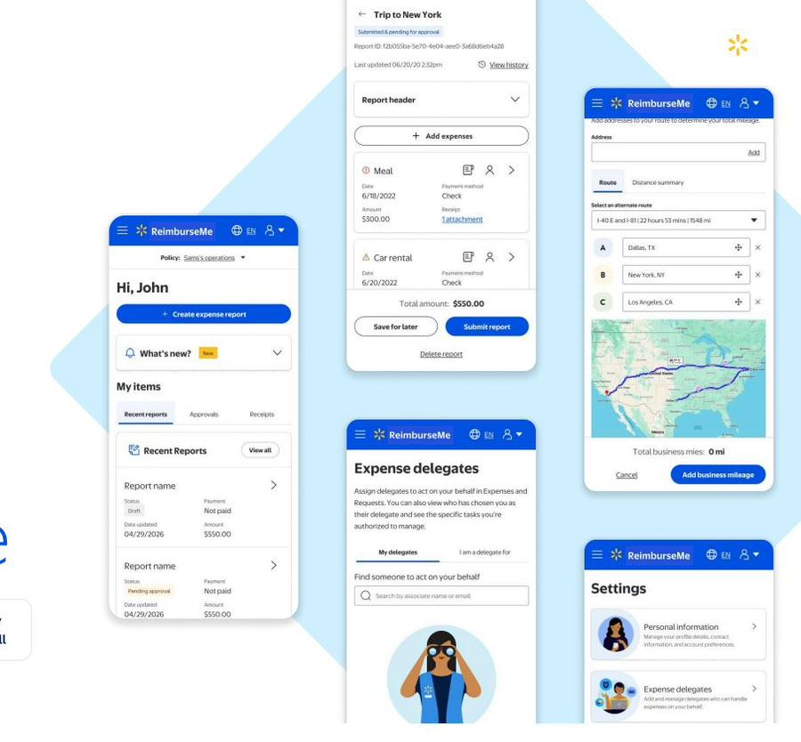
Reimbursements were fragmented across markets, buried in country-specific compliance rules, and running on a system that couldn't scale.
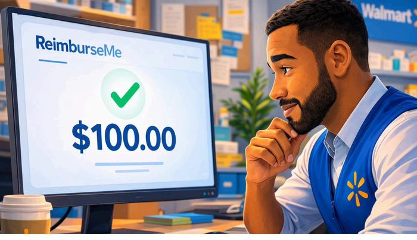
I led design across reimbursement, procurement, and cash-advance flows — partnering closely with Product, Engineering, Research, and Finance to validate every decision.
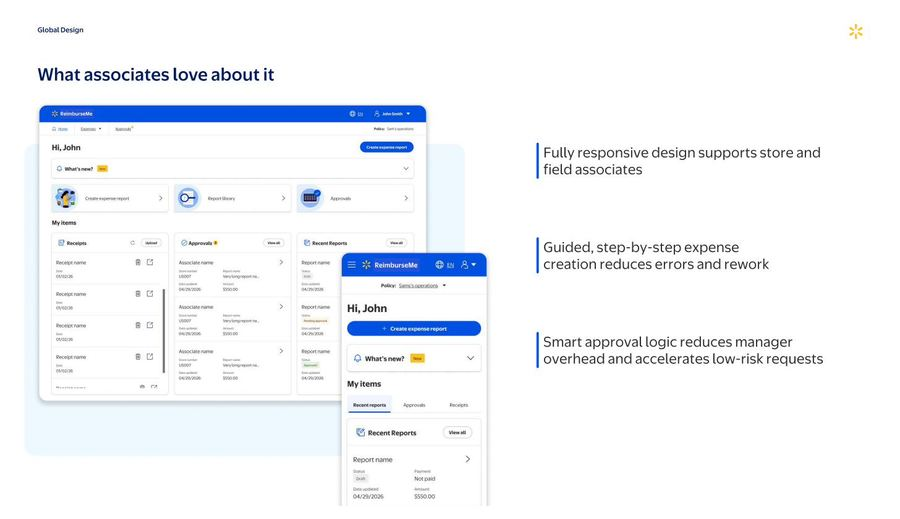
Small interaction decisions that added up to a dramatically faster flow.
Driven by automation, fee avoidance, and reclaimed associate time — with strong usability scores to back it up.
A legacy scheduling tool rebuilt on Walmart's new design system — with AI woven directly into the moment a store lead needs it most.
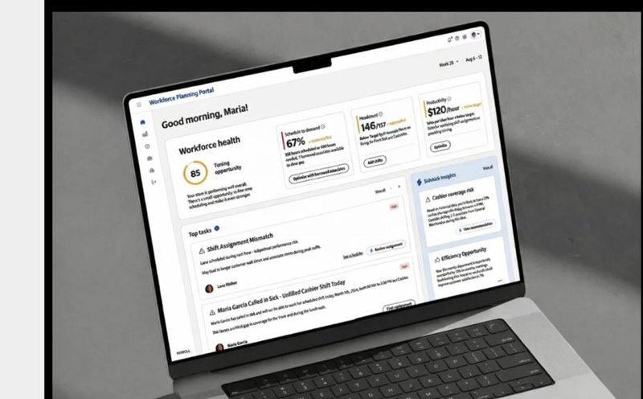
The portal relied on legacy design standards that couldn't keep pace with modern frameworks — or with planners juggling labor demand, availability, and last-minute changes.
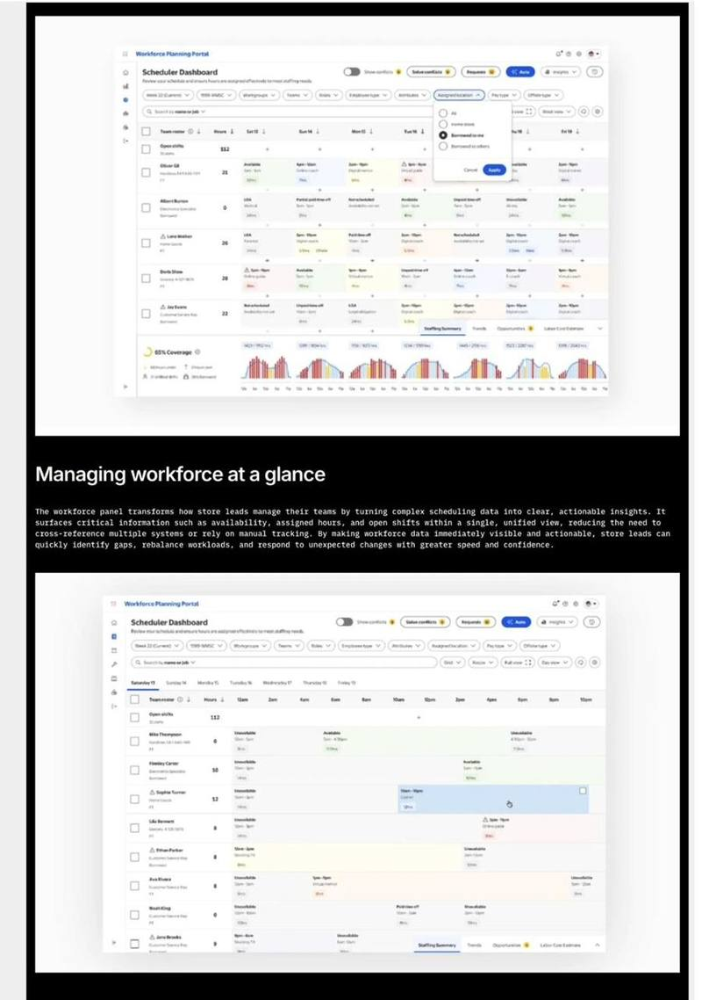
I leveraged LD3.5's React-enabled components and PX standards as the foundation, building custom pieces only where scheduling genuinely needed them.
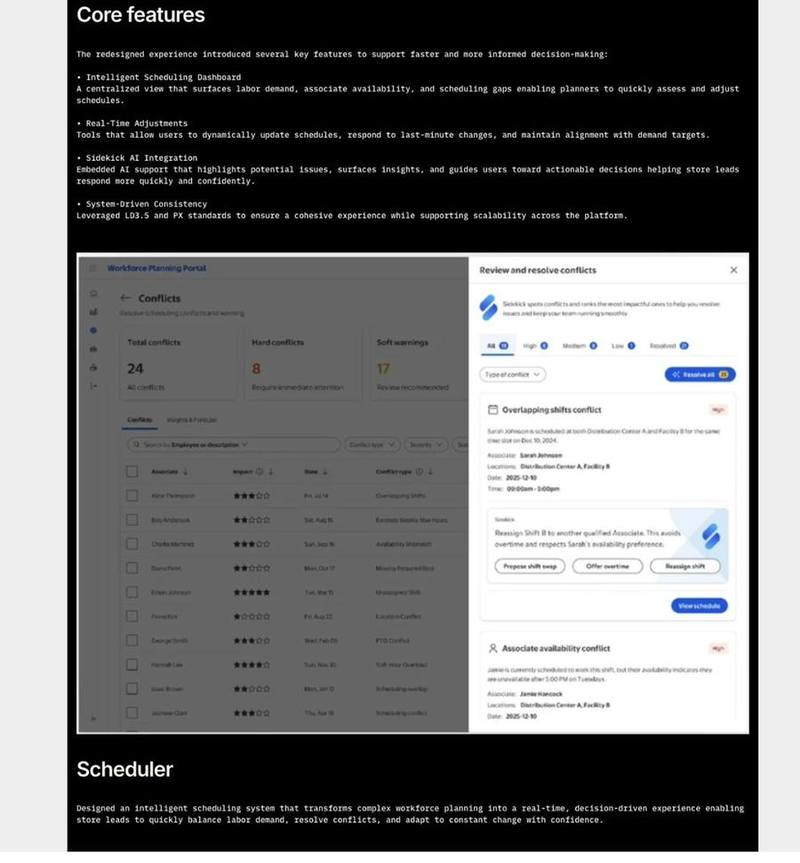
Every feature was built to reduce the cognitive load of a real-time, high-stakes decision.
Feedback has been strong around clarity, consistency, and real-time visibility — with onboarding identified as the next investment.
A 0→1 social platform for animanga fans — built from a blank canvas as founding Product Designer, to 10,000+ downloads in month one.
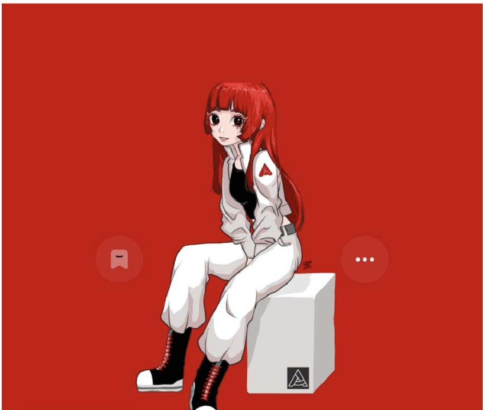
Existing platforms supported passive content consumption, but lacked meaningful tracking tools or real community-driven interaction.
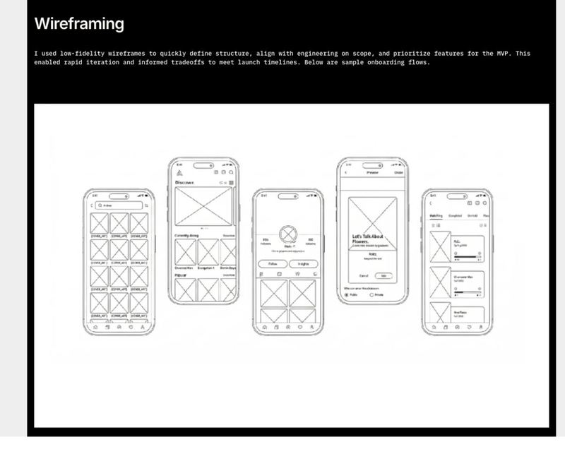
Before a single wireframe, I built a deep understanding of user needs from the ground up.
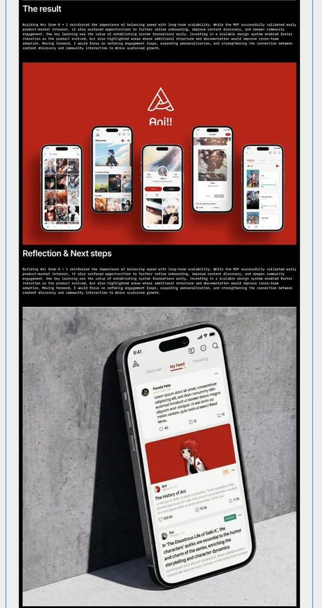
Slot-based components let the product iterate fast early on — then evolve into something more durable.
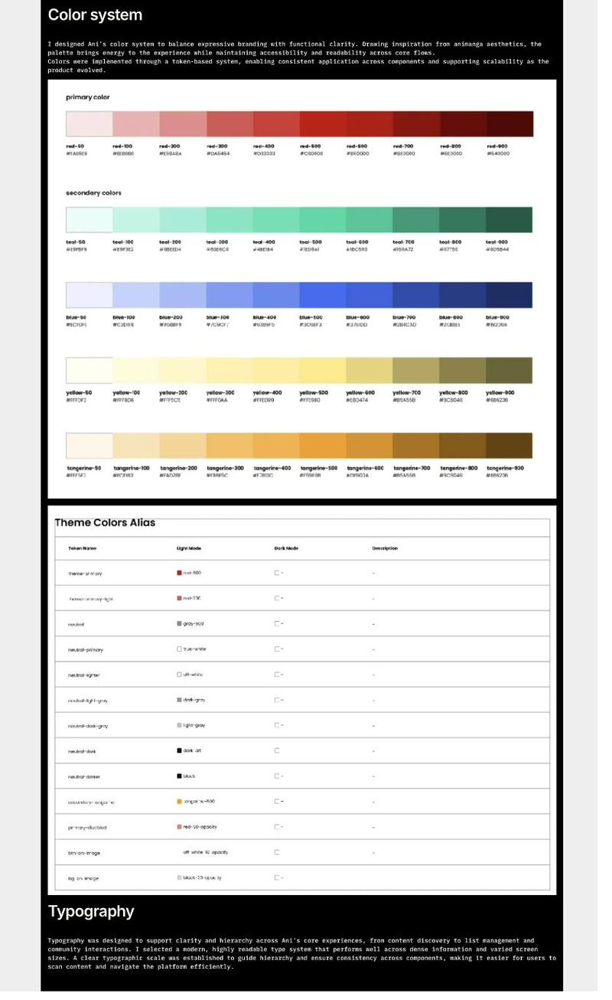
The MVP proved early demand — and showed exactly where to invest next.
Reworking how Topcoder's contributor community browses challenges and submits ideas.
Browsing open challenges and tracking idea submissions took more digging than it should have.
I restructured the dashboard around two clear jobs: find a challenge, submit an idea.
Contributors can browse, filter, and submit without digging through clutter.